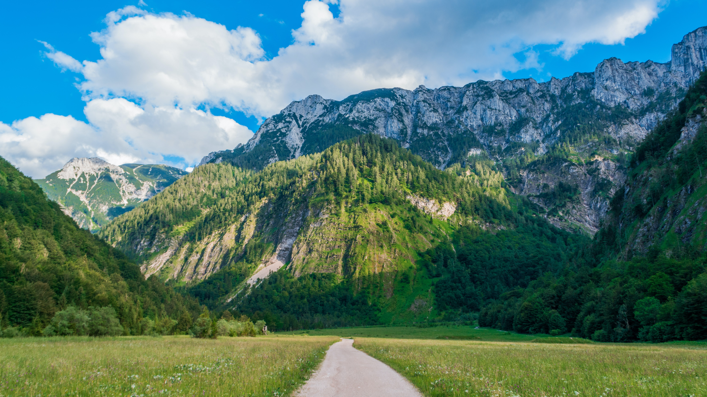

DESERT
A desert is a vast, dry area characterised by sand or rocks that receives little rainfall, has adverse growing conditions for crops and agriculture, and poses difficult living conditions for humans. Deserts cover one-third of the Earth's land surface. Antarctica is known as the world's largest polar desert.

Due to the unfavourable conditions, agriculture is not possible in the deserts. Camels can ingest the bitter or salty water available in the waterholes. Around the water sources in deserts, there are small places of water called oases which are formed from underground river water. Camels are known as the “ship of the deserts” because they can live and roam in deserts for long periods of time without water or food. They are known as the best mode of transportation in the deserts. Camels are blessed with a hump on their back which stores food and water that can be used when needed.
SEA BEACH
A beach is a narrow, gently sloping strip of land that lies along the edge of an ocean, lake, or river. Materials such as sand, pebbles, rocks, and seashell fragments cover beaches. Most beach materials are the products of weathering and erosion. Over many years, water and wind wear away at the land.

Beaches also change seasonally. During the winter, storm winds toss sand into the air. This can sometimes erode beaches and create sandbars. Sandbars are narrow, exposed areas of sand and sediment just off the beach. During the summer, waves retrieve sand from sandbars and build the beach back up again. These seasonal changes cause beaches to be wider and have a gentle slope in the summer, and be narrower and steeper in the winter.
MOUNTAIN
A mountain is an elevated portion of the Earth's crust, generally with steep sides that show significant exposed bedrock. Although definitions vary, a mountain may differ from a plateau in having a limited summit area, and is usually higher than a hill, typically rising at least 300 metres (1,000 feet) above the surrounding land. A few mountains are isolated summits, but most occur in mountain ranges.
Mountains are formed through tectonic forces, erosion, or volcanism, which act on time scales of up to tens of millions of years. Once mountain building ceases, mountains are slowly leveled through the action of weathering, through slumping and other forms of mass wasting, as well as through erosion by rivers and glaciers.